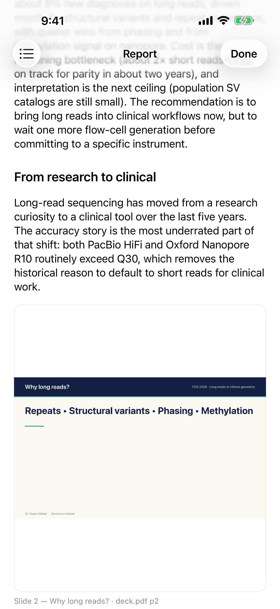
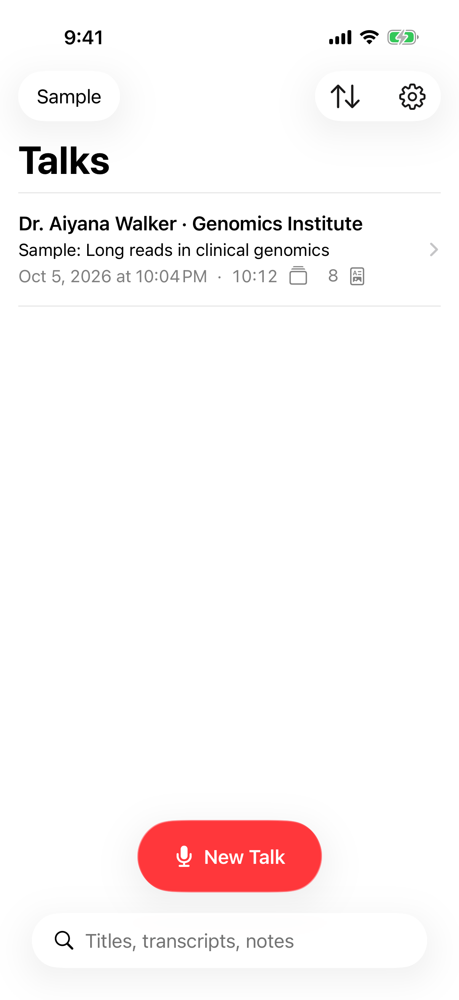
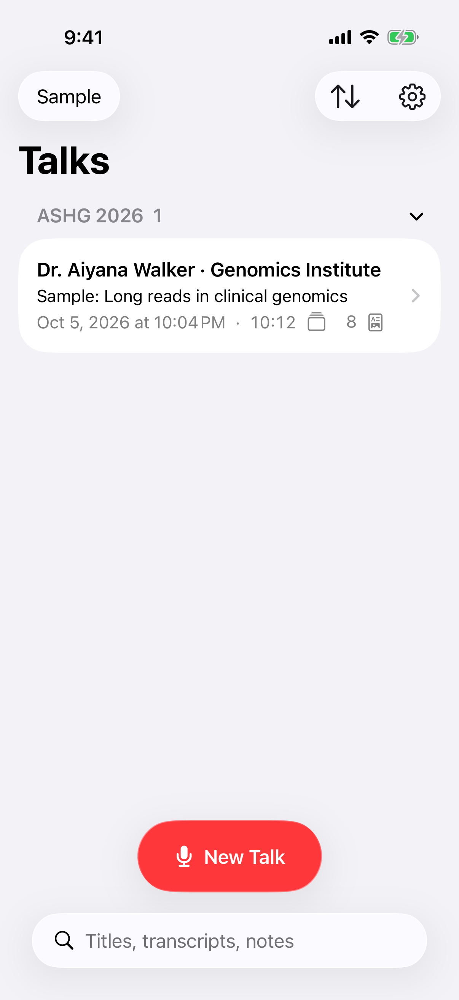
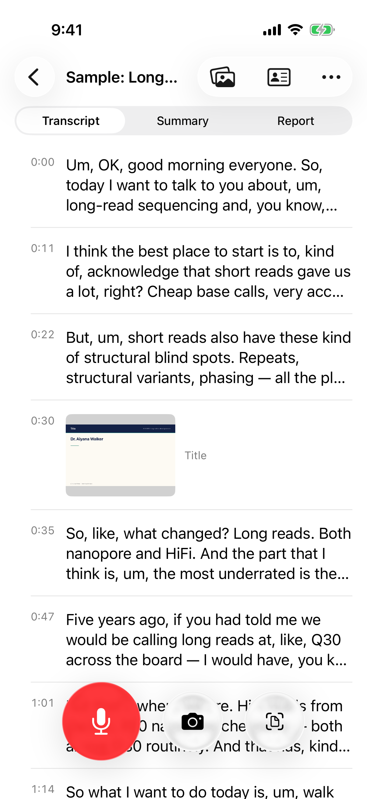
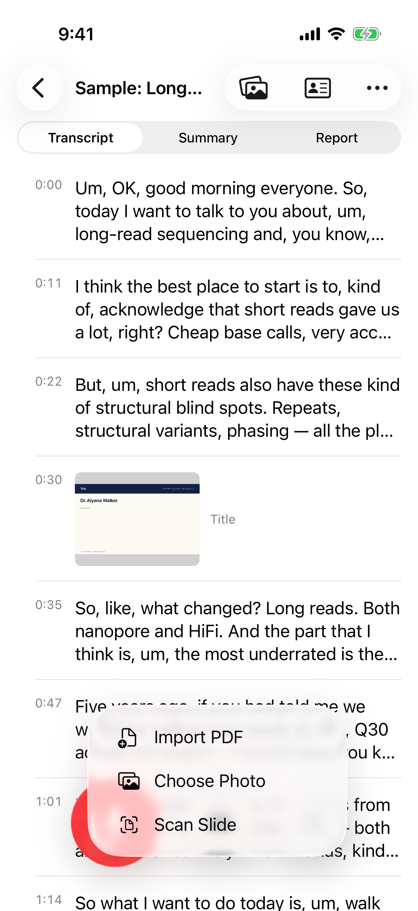
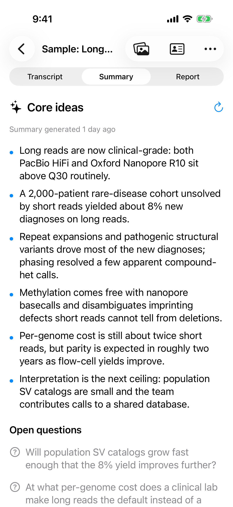
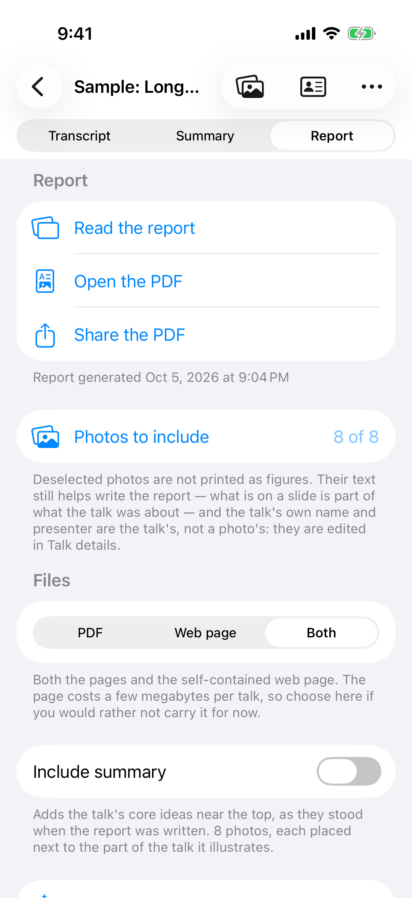
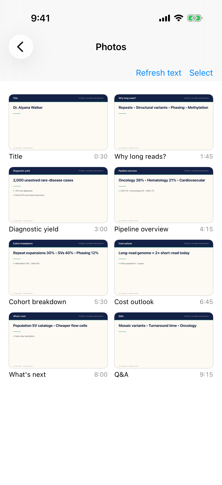
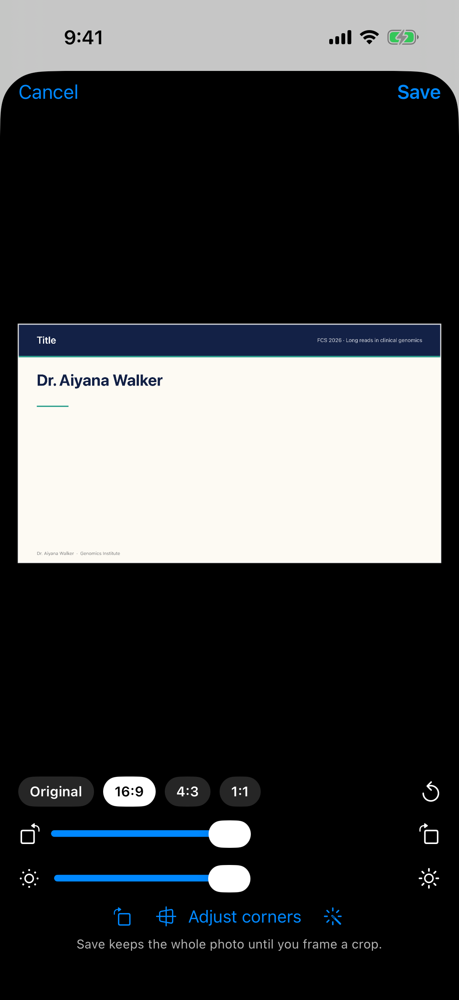
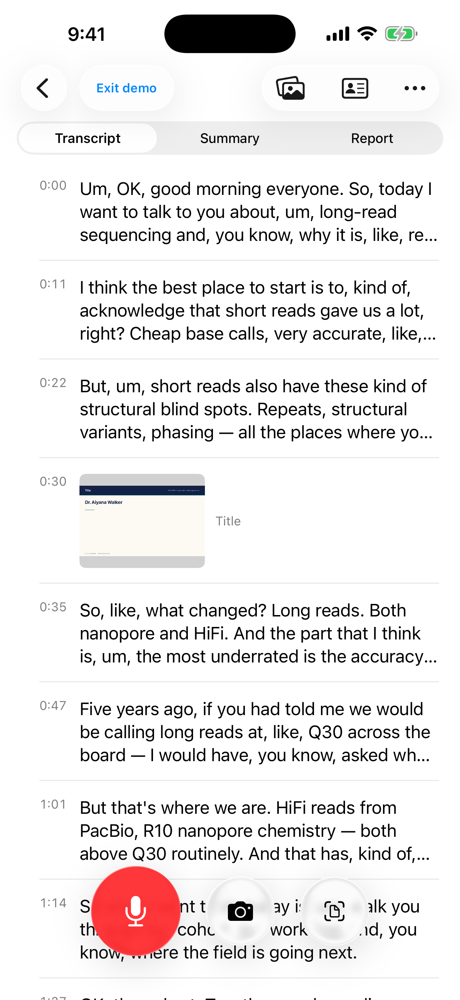

Record the talk. Snap the slides. Conference Note writes a report that reads as one page, with each slide placed where it supports the argument.
Now in beta on TestFlightJoin the betaEmail support@nduwork.com with your Apple ID email and we'll send a TestFlight invite.

Keep your head up in the room; the app does the paperwork.
Live transcription runs on your iPhone, with the screen off or while you take a photo. Audio is never saved.
Photograph slides in the app, scan them, or import a deck. Text on slides fixes names and jargon in the notes.
One tap writes a TL;DR and sections, with slides as figures. Export a PDF, a web page, or both.
A walk through a sample talk, screen by screen.

Every recording lands here. Tap New Talk to start recording a session.

Press and hold a talk, then choose Group to file it under a conference or topic. Tap a group's header to fold it away.

A live transcript builds while you record. The photo and details buttons at the top hold your slide photos and the talk's speaker and title.

Tap the camera to photograph a slide. It's straightened for you and placed in the transcript at the moment you took it. Add slide lets you scan a slide, pick a photo from your library, or import the speaker's PDF.

Core ideas and open questions, written from the transcript and your slide photos.

A full write-up with your slides as figures, as a PDF and/or a web page you can share. You choose which photos to include and whether to add the summary.

Slide photos taken during the talk. Their text is read and used in the notes.

In Photos, tap Select, choose a photo, then Edit. Crop to the slide, rotate, straighten, brighten, or drag the corners to fix a photo taken at an angle. Save keeps the whole photo until you frame a crop.
Slides are matched to the moment you took them, then placed beside the claim they support. The PDF, the web page and the in-app reading are the same document, so they never disagree.
Everything that happens during the talk is free and local.
Core ideas and open questions, written from the transcript and your slide photos.
Slides are detected and straightened for you. Crop, brighten, or drag the corners if you like.
Speaker, affiliation and event are read from the title slide. Anything you type stays yours.
A paginated PDF, or one self-contained interactive page with a TL;DR on top.
Mark talks with a colour, sort by date or title, rename from the list.
Transcription and slide OCR are on-device. Apple's on-device model is the fallback.

Speech is transcribed on-device and the audio is never saved or uploaded. Text is sent for notes or a report only when you press the button. No ads, no analytics SDK, no tracking.
Read the privacy policy →Purchased tokens never expire.
It listens to transcribe, live, on your iPhone. The audio is not saved and not uploaded.
On-device transcription uses Apple's SpeechAnalyzer, which ships with iOS 26.
When you press for notes or a report, the text goes through Conference Note's credit service to OpenAI, which does not train on API data. The service keeps only a count of tokens used.
You decide. Conference Note is a note-taking tool, and you are responsible for having permission to record and capture each talk and for respecting the rules of the event. See the Terms of Use.
A guided demo with sample data runs before sign-in. Real use needs Sign in with Apple, which ties your credits to you.